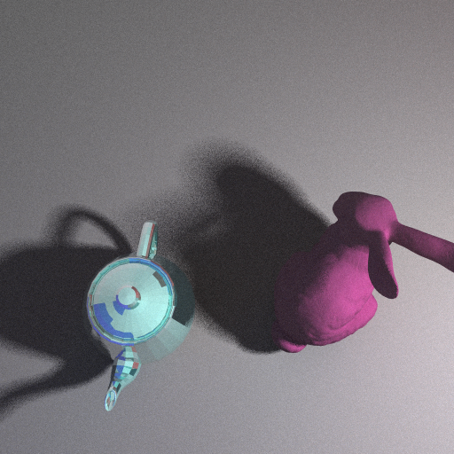

The following images were rendered at 512 x 512 pixels.
The rendering technique implemented was unidirectional path tracing.
Images demonstrate path tracer's ability to handle complex geometry, and path tracer features that involve Monte Carlo Integration and sampling techniques. These features are spherical area lights and depth of field.
Details can be found in my final report.
Three spheres illuminated by three spotlights
Metallic teapot and matte bunny. Soft shadows from illumination by spherical light.
Line of spheres, where focal depth is at 50
Line of spheres, where focal depth is at 140
Low resolution floating dragon, 1 sample per pixel